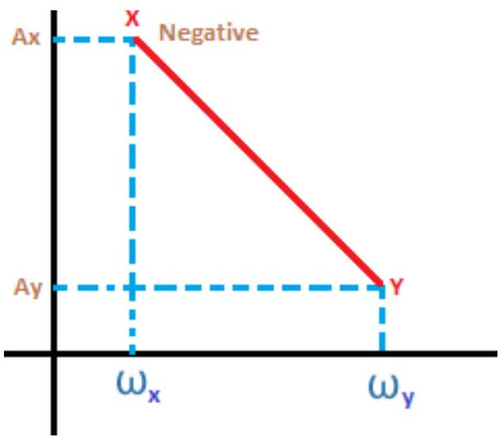
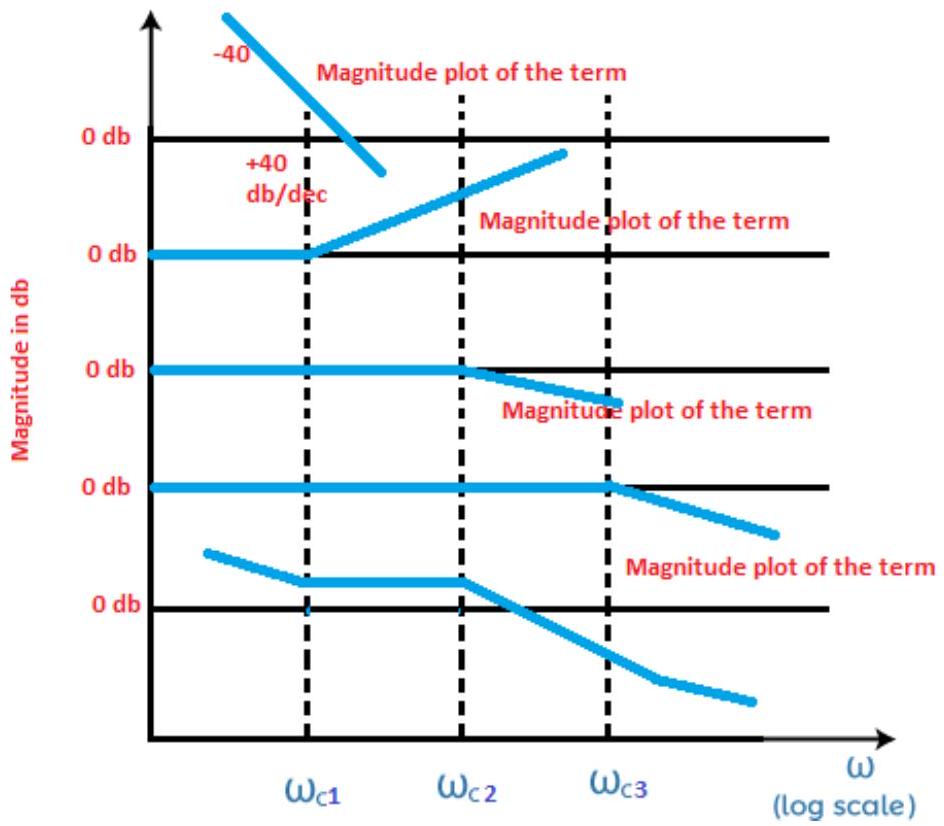
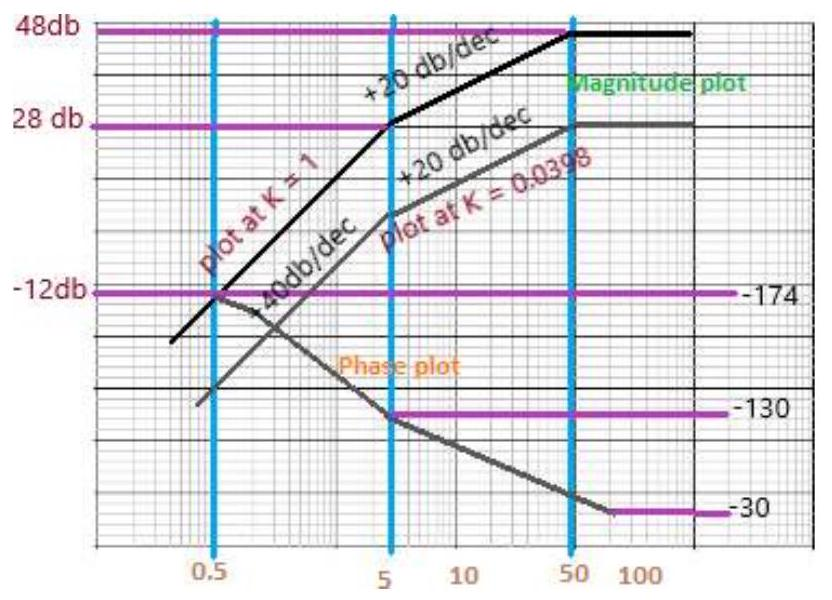

Unit-8: Frequency-Response Analysis & Bode Plot
Procedure to draw the magnitude curve and phase angle curve of the bode plot
Before proceeding, let's discuss the main conclusions obtained from the topic discussed above.
- The constant gain K, derivative, and integral factor in the bode plot contributes gain at all the frequencies.
- The higher order (two and more) factors in the transfer function contribute gain only when the frequency is greater than the corner frequency. The natural frequency in case of quadratic factor is assumed as corner frequency.
We have also discussed the impact of the derivative and integral factor on the positive and negative slope of the Bode plot.
Let's discuss the steps that will help us to draw the bode plot.
- Convert the given transfer function into the time constant form, which is as follows: It helps us to easily find the corner frequencies.
-
Arrange the corner frequencies in the increasing order. The format of the table is shown below:
Term Corner frequency Slope (decibels) Change in slope - The 'Term' specifies the separate constant gain, derivative factor, and the integral factor, such as, $K, K/j\omega$, or $K (j\omega)$. The 'change in slope' includes the change in the value of the slope at each corer frequency.
- Select a frequency, which has the lower value compared to the lowest corner frequency. Now, calculate the value of the terms at that selected frequency.
-
Find the gain in decibels one by one at every corner frequency. The formula to find the gain is given by:
$$ \text{Gain at } \omega_y = (\text{Slope from } \omega_x \text{ to } \omega_y \times \log_{10}(\omega_y/\omega_x)) + \text{gain at } \omega_x $$The frequencies $\omega_x$ and $\omega_y$ are shown below: 
- Now, we will perform step 4 again at a different frequency, which is greater than the highest corner frequency.
- Take a semilog graph paper and first mark the dimension on the axis to draw the plot. The magnitude will appear on the y-axis and the frequency range will appear on the x-axis.
- Mark the points calculated in the above steps on the semilog graph paper and join the points. The points on the graph paper should be joined only with straight lines. We can also mark the slope at every point on the graph.
- The plot is assumed as the approximated plot. The exact plot requires the exact calculation at every corner frequency.
Consider an example.
Let the transfer function be $G(s) = K (1 + sT_1)^2 / [s^2(1 + sT_2)( 1 + sT_3)]$
Put, $s = j\omega$
$G(j\omega) = K (1 + j\omega T_1)^2 / [( j\omega )^2(1 + j\omega T_2)( 1 + j\omega T_3)]$
The value of T1, T2, 3 in the increasing order will be $T_2 < T_3 < T_1$.
There will be three corner frequencies at $1/T_1, 1/T_2$, and $1/T_3$.
In the given transfer function $G(s) = K (1 + sT_1)^2 / [s^2(1 + sT_2)( 1 + sT_3)]$, there are four terms. Thus, we will first draw the magnitude plot of these four independent terms. The four terms are $K/ (j\omega)^2$, $(1 + j\omega T_1)^2$, $1/(1 + j\omega T_2)$, and $1/( 1 + j\omega T_3)$. The first term ($K/s^2$) corresponds to an initial slope of -40 dB/decade. The third and fourth terms represent integral terms each contributing a slope change of -20db/decade at their corner frequencies. The second term is the derivative term (squared) contributing +40dB/decade slope starting at its corner frequency.
The final plot will be the combined plot of all the four plots, as shown below:
The above Bode plot shows that the first term starts with a slope of -40 dB/decade. The third and fourth terms decrease the slope by 20 dB/decade each at $\omega_{c2}$ and $\omega_{c3}$. The second term increases the slope by 40 dB/decade at $\omega_{c1}$.
Let's discuss how the value is combined.
A particular value at a region will be the result of the combined values at the above four sections. For example, the section between $\omega_{c2}$ and $\omega_{c3}$ will have the value by adding all section values (-40db + 40db + 0 + 0 = 0db).
Phase margin and gain margin of a Bode plot
The phase angle is calculated at various values of frequency. The frequencies are generally the same frequencies selected for plotting the magnitude section of a Bode plot. The phase and magnitude sections are drawn in a single semilog sheet with a common frequency scale for easy plotting. It also saves time.
The relation between the phase margin and the phase angle is given by:
Where,
Y is the phase margin
a is the phase angle
It is calculated at the gain crossover frequency.
If the phase cross over frequency is negative, the gain margin of the system is positive. Similarly, if the phase cross over frequency is positive, the gain margin of the system is negative.
Bode Plot Example
Let's discuss an example that will help us to clearly understand the concept of Bode plot, its steps, and the plotting on the semilog paper.
Example: Sketch the Bode plot of the following transfer function $G(s) = Ks^2/[(1 + 0.2s)(1 + 0.02s)]$.
Also determine the system gain K and the gain crossover frequency to be 5 radians/second.
Solution:
$G(s) = Ks^2/[(1 + 0.2s)(1 + 0.02s)]$
Step 1: Finding the corner frequencies
Here, we will first find the value of $G(j\omega)$.
There will be two corner frequencies at $T_1=0.2$ and $T_2=0.02$.
Thus, the corner frequencies are $\omega_{c1} = 1/0.2 = 5$ radians/second and $\omega_{c2} = 1/0.02 = 50$ radians/second.
Step 2: Preparing the table
As discussed in the above steps, we will prepare a table. There are three independent factors, $(j\omega)^2$ (or $-\omega^2$), $1/(1 + 0.2j\omega)$, and $1/(1 + 0.02j\omega)$. So, the table will include three terms, as shown below:
| Term | Corner frequency (rad/s) | Slope (dB/decade) | Change in slope (dB/decade) |
|---|---|---|---|
| $K(j\omega)^2$ | - (Initial slope) | +40 | +40 |
| $1/(1 + 0.2j\omega)$ | 5 | -20 | 40 - 20 = 20 |
| $1/(1 + 0.02j\omega)$ | 50 | -20 | 20 - 20 = 0 |
The first term will have a slope of 40 due to its square. The change in slope will include the sum of the slope from the top to bottom. The first row will have no change in the slope due to no term above it.
Step 3: Magnitude Calculation
We will find the value of gain at selected low frequency, two corner frequencies, and the high frequency. The gain $A = 20 \log |G(j\omega)|$. Let K=1 for initial slope calculation.
The initial term is $(j\omega)^2$, so the gain equation related to it is $A = 20 \log |(j\omega)^2| = 40 \log \omega$.
Let's select the frequency 0.5 rad/s, which is lower than the first corner frequency.
At, $\omega = 0.5$ rad/s (low frequency), the value of gain is:
$A = 40 \log(0.5) \approx 40(-0.301) \approx -12$ dB
At, $\omega = \omega_{c1} = 5$ rad/s (first corner frequency), the value of gain is:
$A = 40 \log(5) \approx 40(0.699) \approx 28$ dB
Now, use the formula for gain change between corner frequencies.
Gain at $\omega_{c2}$ = (Slope from $\omega_{c1}$ to $\omega_{c2}$ $\times \log(\omega_{c2}/\omega_{c1})$) + gain at $\omega_{c1}$
Slope from $\omega_{c1}$ to $\omega_{c2}$ = +20 dB/decade (from table)
Gain at $\omega = \omega_{c2} = 50$ rad/s:
$A = (20 \log(50/5)) + 28 = (20 \log 10) + 28 = 20(1) + 28 = 48$ dB
Now for high frequency, let $\omega_h = 100$ rad/s.
Gain at $\omega_h$ = (Slope from $\omega_{c2}$ to $\omega_h$ $\times \log(\omega_h/\omega_{c2})$) + gain at $\omega_{c2}$
Slope from $\omega_{c2}$ to $\omega_h$ = 0 dB/decade (from table)
Gain at $\omega = 100$ rad/s:
$A = (0 \times \log(100/50)) + 48 = 0 + 48 = 48$ dB
Step 4: Phase plot
The phase angle of the given transfer function $G(j\omega) = -K\omega^2/[(1 + 0.2j\omega)(1 + 0.02j\omega)]$ is:
The term $(j\omega)^2 = -\omega^2$ has an angle of $180^\circ$.
Let's find the value of phase angles at different values of $\omega$. It is shown in the below table:
| $\omega$ (rad/s) | $\tan^{-1}(0.2\omega)$ (deg) | $\tan^{-1}(0.02\omega)$ (deg) | Phase angle (deg) | Points for reference |
|---|---|---|---|---|
| 0.5 | 5.7 | 0.6 | 180 - 5.7 - 0.6 = 173.7 | E |
| 1 | 11.3 | 1.1 | 180 - 11.3 - 1.1 = 167.6 | F |
| 5 | 45 | 5.7 | 180 - 45 - 5.7 = 129.3 | G |
| 10 | 63.4 | 11.3 | 180 - 63.4 - 11.3 = 105.3 | H |
| 50 | 84.3 | 45 | 180 - 84.3 - 45 = 50.7 | I |
| 100 | 87.1 | 63.4 | 180 - 87.1 - 63.4 = 29.5 | J |
We can consider the approximated value for the given values of the phase angle.
Step 5: Calculation of the value K
We are given that the gain crossover frequency is 5 rad/s. This means the magnitude of the Bode plot (with K) must be 0 dB at $\omega=5$ rad/s.
The magnitude is $|G(j\omega)| = |K(j\omega)^2/[(1 + 0.2j\omega)(1 + 0.02j\omega)]|$.
Magnitude in dB is $A_{dB} = 20 \log |K| + 20 \log |(j\omega)^2/[(1 + 0.2j\omega)(1 + 0.02j\omega)]|$.
We calculated the gain of the transfer function *without K* at $\omega=5$ rad/s to be 28 dB (in Step 3).
So, at $\omega=5$, $A_{dB} = 20 \log K + 28$ dB.
We want this to be 0 dB (gain crossover).
$0 = 20 \log K + 28$
$20 \log K = -28$
$\log K = -28/20 = -1.4$
Thus, the term -28db is contributed by the term K.
The magnitude plot and the phase plot are shown below:
Exact value of the plot
We know that the exact plot is 3 db less than the actual plot at corner frequencies (for denominator terms) or 3 dB more (for numerator terms). Thus, for the exact plot, the gain adjustment due to K would be based on the desired 0 dB crossover matching the *exact* magnitude curve, not the asymptote calculation.
Exact magnitude at $\omega=5$ (for K=1):
Magnitude in dB (for K=1) = $20 \log(17.59) \approx 24.9$ dB.
For gain crossover at $\omega=5$, we need $20 \log K + 24.9 = 0$.
$20 \log K = -24.9$
$\log K = -24.9 / 20 = -1.245$
At last, let's discuss some of its advantages and disadvantages.
Advantages of the Bode Plot
The advantages of the Bode Plot are as follows:
- It covers low frequency as well as high frequency.
- The Bode plot provides the relative stability of the system in terms of the gain margin and phase margin.
- It can be drawn both for the closed loop system and open-loop system.
- It also provides us a method to improve the stability of the system.
- It converts the multiplication of magnitudes into addition.
- The sketching of bode plots is derived from a simple method.
- The information loss is very less.
- It consists of two graphs that eliminate the confusion between the magnitude and the phase plots.
- Bode plot is based on the asymptotic approximations that use straight line segments for plotting on the semilog graph.